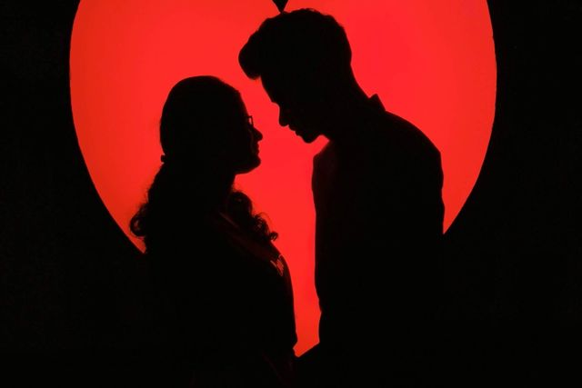
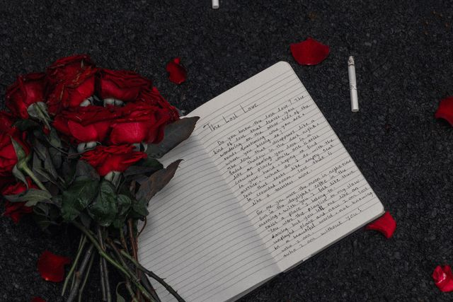
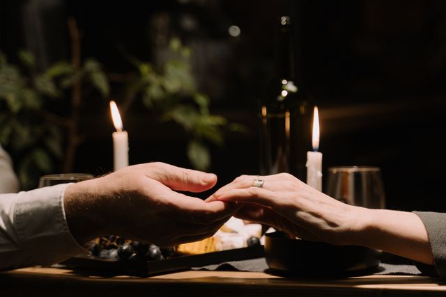

Photo by Nandhu Kumar from Pexels: Couple looking each other love background silhouette
Wow..... Love Love Love..... What a time to be alive to actually feel emotions for another human being in a romantic way without these new social dating rules, social media and technology getting in the way of us connecting as humans. There wasn't any social media or devices to facetime,text or see what the person is doing throughout their day. You would wait by the phone waiting for their call on your landline, or leave a voicemail and wait until they hear it and call you back. Also, when we moved into the flip phones there were some limits. Many phones had a pay by the minute plan, when you can talk for a small amount of time so the bill dont be high or block at a certain time. Sometimes you had to meet someone parent or family memeber to ask someone out. When we left eachother you wouldn't know what the other person was doing, we just have to wait to see eachother in person or talk on the phone to catch up on eachother lives. Again..... What a time.
There are still some people who are still wishing and hoping for that "OLD SCHOOL LOVE" experience. You can still get this. Check this out 20 Old School Dating Gestures That Will Never Go Out Of Style
Want to listen to some throwbackMusic? OR Want to reminisce on some throwback places to visit Popular Places & Stores?
Photo by Chaitanya jadhav from Pexels: Red roses and notebook

Photo by cottonbro studio from Pexels: A close up shot of a couple holding hands
Back to Home Page